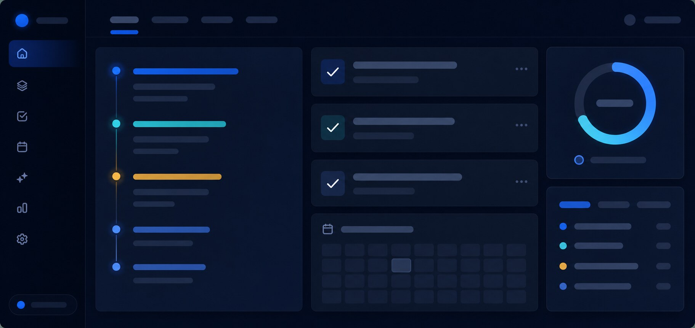
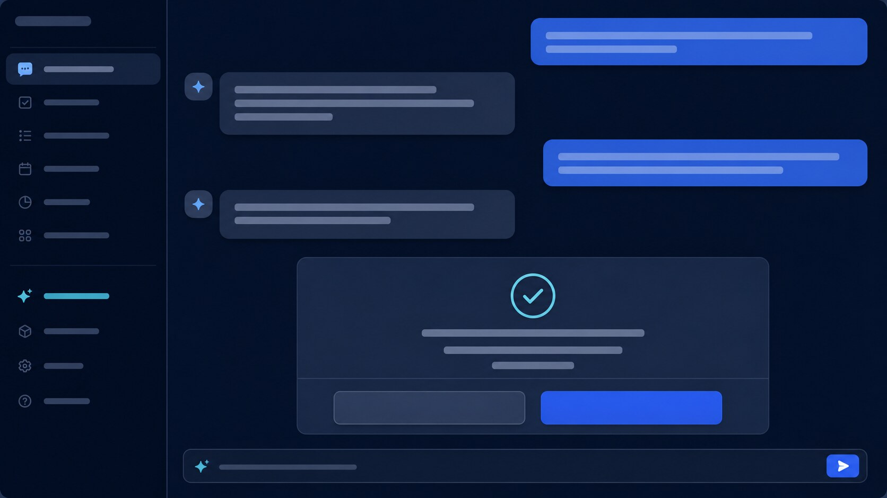

Говорите естественно
Русские формулировки, приблизительные названия и продолжение контекста.
OPEN SOURCE · SELF-HOSTED
Скажите голосом — планировщик соберёт задачи, встречи, почту и напоминания в одном приватном пространстве.
Встреча с Иваном
Google Calendar · TelemostНе ещё один чат-бот.
Русские формулировки, приблизительные названия и продолжение контекста.

Сроки, приоритеты, поиск, фильтры, редактирование и завершённые задачи.
Находит переписку, читает PDF, DOCX и таблицы, составляет резюме и готовит ответ. Отправка — только после подтверждения.
Почта, календарь, задачи, таймеры и голос работают через единый безопасный диалог.
PRIVACY BY ARCHITECTURE
Docker Compose поднимает Web, API, worker, PostgreSQL, Redis, backup и автоматический TLS.
git clone https://github.com/tigramaan/ai-planner.gitdocker compose --profile caddy up -d --build
OPEN CALL
Ищем contributors для Claude runtime, Ollama, YandexGPT, навыка Алисы, GigaChat и других голосовых помощников.